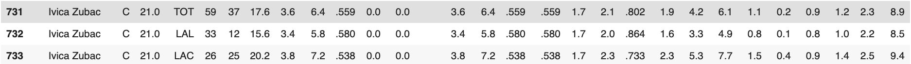

We have changed the original goal of the project and this has been mentioned in the last paragraph.
Where is the data from?
We have gathered our data from Hoopshype(for salaries), a sub-organization of USA Today specializing in NBA league and Sports Reference(for Player stats for 2018-2019 season). We used web-scraping to collect our data and took advantage of pandas to join our data regarding performance and salary by executing a left join.
Sports Reference and USA Today are both reliable sources.
We had over 500+ data points. We sorted the data by salary in descending order. Then, we extracted every 5th row from our data to form an evenly distributed sample, making the sample size 95. Since, we are taking the values at uniform intervals, the sample should be representative and as it incorporates salary values from highest to the lowest values evenly.
The data we have collected is public. Thus, we have the right to use it and make predictions based on it. The data from these two websites is extensively used for analysis of NBA seasons.
How clean is the data? Does this data contain what you need in order to complete the project you proposed to do? (Each team will have to go about answering this question differently, but use the following questions as a guide. Graphs and tables are highly encouraged if they allow you to answer these questions more succinctly.)
The data is extremely clean. Since the NBA has very clearly defined statistics, such as points, rebounds, salary, etc, we are not only able to get all the data we need, but we also are able to access all necessary data points for each player.
After cleaning, we had 475 data points extracted from Basketball Reference, and 576 from HoopsHype (the salary db). Since Hoopshype contained salaries of players on 10 day contracts without any significant stats, we removed those extra datapoints, and then joined based on player name. We are not grouping by anything, so there are a total of 475 datapoints in the single, total group. 475 players is a total sample of the league, since each team can have 15 players at a time, giving us a good mix of stars, bench players, and players that were on teams for a few months of the season.
There are no missing values. For each player, we are able to access all the relevant statistics, along with their salaries for the 2018/2019 season.
In some cases, players were cut/traded throughout the season, so their names appeared multiple times for each team they played for. Since the NBA statistics page we scraped from had a row for their “total” statistics, along with their statistics for each team, we just kept the rows that had their total statistics, and deleted the other. For example in the case of Ivica Zubac, he played for a total of two teams so he had a total of 3 rows (as displayed below):

In this case, we kept row 731, since it was an aggregate of all of his statistics, and we deleted the other two rows.
The data is skewed, since we have players coming from a wide variety of backgrounds. In our data, we have MVP-caliber players, such as Stephen Curry, as well as bench players on minimum deals. So, in this case there will be a wide disparity in terms of the max salary(37,457,154) and min salary (48150) in the league.
All the data was initially coming in as strings, since we were scraping from websites. We had to convert the strings to floats in our script for all of the statistics fields barring Player Name, Team Name and Position Name.
We had some issues scraping the data with lots of characters before and after the dataset which we dealt with by cleaning.
As we mentioned earlier, we threw away the data that pertained to Rookie data. Also, we deleted duplicate rows for players when they had traded teams mid-season. This won’t affect our analysis because we are not factoring in rookies in our prediction models since their contract types are different. And, also for the duplicate rows we retained the row with the combined total statistics and that is what is required for our analysis.
Summarize any challenges or observations you have made since collecting your data. Then, discuss your next steps and how your data collection has impacted the type of analysis you will perform. (approximately 3-5 sentences)
The biggest challenge we faced was that the dataset we found online (advanced statistics for NBA players 2019) did not include the players salary, so we had to scrape a separate data set with just NBA players and salaries and used to left outer join these tables together. We faced a challenge scraping the 2nd data-set because there were a lot of unwanted characters on either side of the values needed so that involved a lot of data-cleaning. We put the 2 data-sets into 1 pandas dataframe for ease of analysis.
For the next steps, once we got the data, we realised that our original idea of hypothesis testing wouldn’t work because there are a lot of variables to consider. So, based on this data set, we are instead going to conduct an analysis to predict the NBA salary that correlates to player’ statistics we have collected and based on that judge whether a player is under or over-paid.